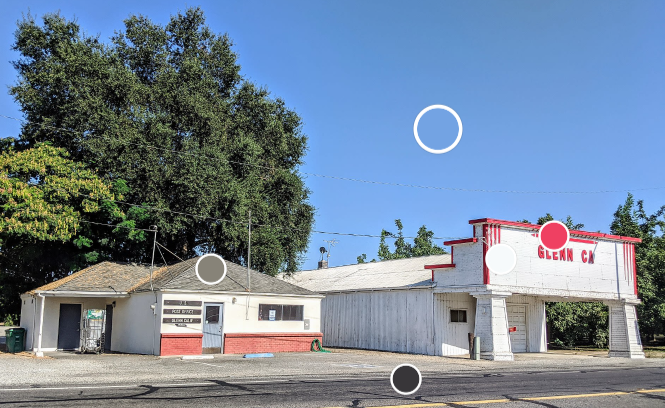

Purpose: The Community of Glenn Chamber of Commerce supports and elevates local businesses, builds community, and provides a platform for regional influence.
Scenarios:
- Prospective member and small business owner comes to the site to find information for (and benefits of) joining.
- Neighboring community chamber director needs to find contact information of chamber board members so they can coordinate a joint event.
- Glenn community member would like to look up information about the community or see historic info for the area, and then share this with family members.
Colour Schema:
Chosen because they are reflective of the two central buildings in Glenn. Primary site colour will be white, accents will be red, and backgrounds will alternate between the grey and blue. Headers and key text will be Jet (in bold) and text will generally be black for contrast.
Link to colour scheme
Typography:
Headers and emphasized text will be Staatliches
Link to emphasized fontGeneral text will be Cormorant Garamond
Link to text font